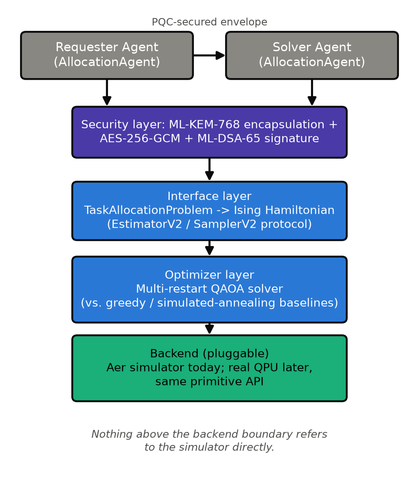
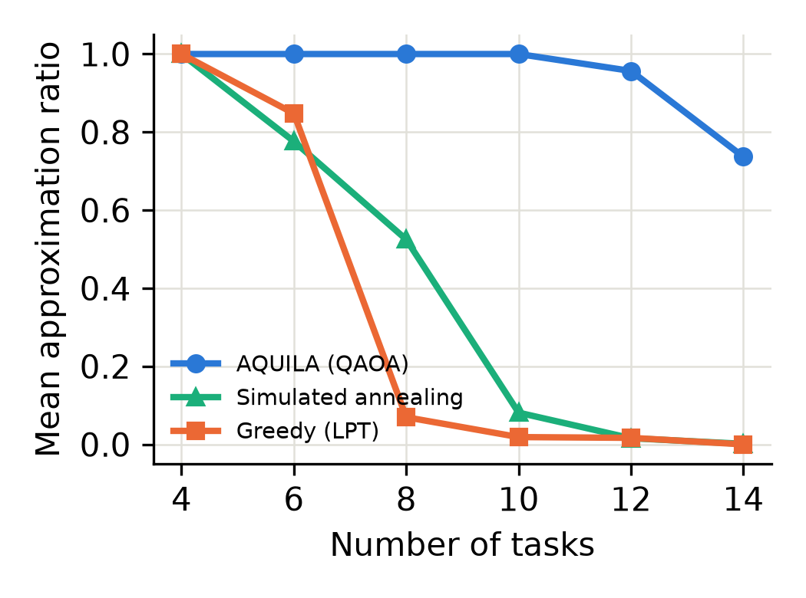
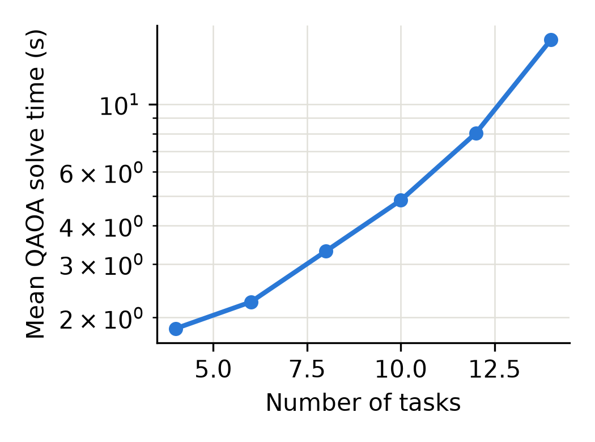
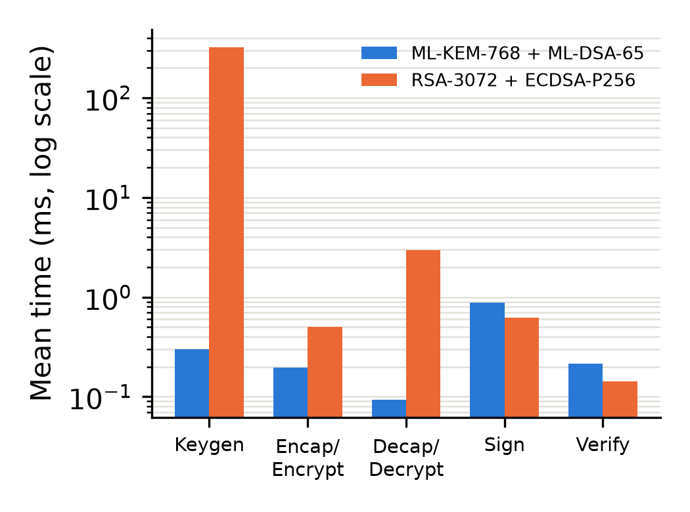
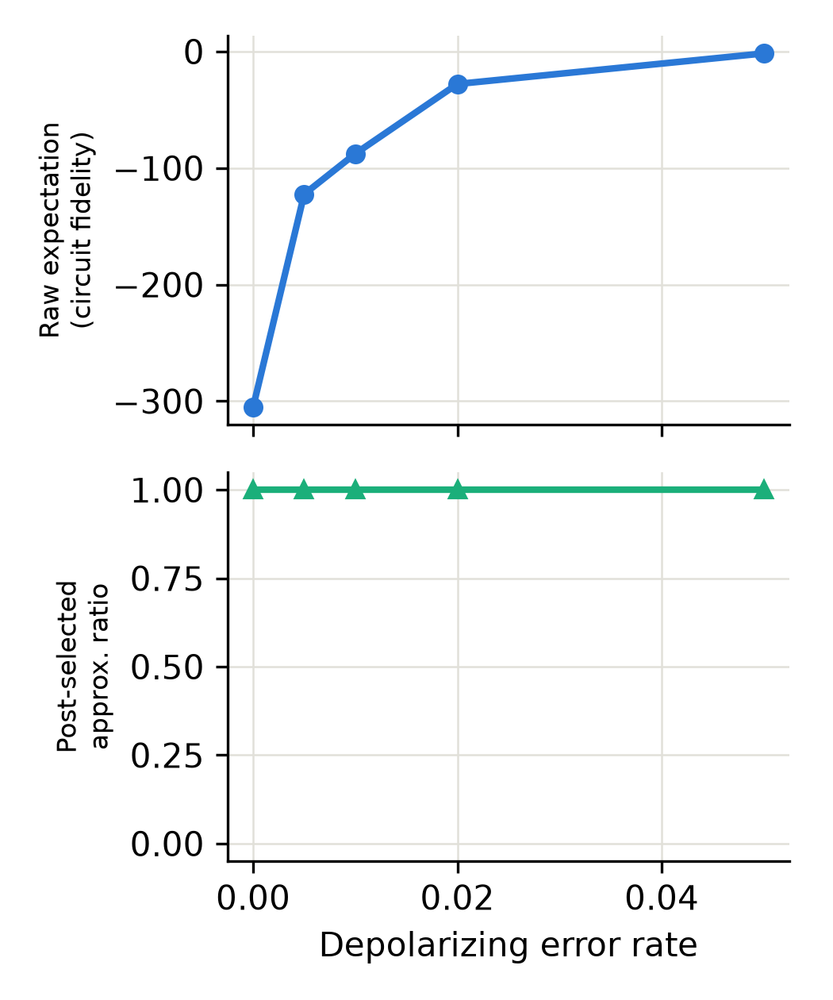

AQUILA lets agentic AI systems offload combinatorial task and resource-allocation subtasks to a multi-restart QAOA solver through a scalable, backend-agnostic quantum-classical interface — hardened with a real post-quantum-secured (ML-KEM-768 / ML-DSA-65) agent messaging layer.
The interface layer talks to backends purely through Qiskit's EstimatorV2/SamplerV2 primitive protocol. Nothing above that boundary refers to the simulator directly — a hardware-backed primitive implementation would satisfy the interface without changing the optimizer or agent code.

Pairwise post-quantum-secured channel: ML-KEM-768 encapsulation + AES-256-GCM + ML-DSA-65 signature, verify-then-decrypt ordering. Verified against wrong-recipient, tampering, and impersonation attacks.
TaskAllocationProblem → Ising Hamiltonian, dispatched to any backend exposing estimator()/sampler(). Aer simulator today; real QPU later, no API change.
Multi-restart QAOA (COBYLA outer loop) with full-distribution post-selection, benchmarked against greedy (LPT) and multi-restart simulated-annealing baselines.
Aer statevector simulator, with an optional depolarizing noise model for studying solution-quality degradation under simulated NISQ-era hardware.
Every number below comes from the evaluation harness in evaluation/ — reproducible, with results and figures checked into the repo.




Mean of 30 trials against a matched-strength classical baseline (RSA-3072 / ECDSA-P256). Full methodology in the paper.
| Metric | ML-KEM-768 / ML-DSA-65 | RSA-3072 / ECDSA-P256 |
|---|---|---|
| Keygen | 0.30 ms | 322.70 ms |
| Encap / Encrypt | 0.20 ms | 0.50 ms |
| Decap / Decrypt | 0.09 ms | 2.98 ms |
| Sign | 0.88 ms | 0.62 ms |
| Verify | 0.22 ms | 0.14 ms |
| Public key | 1184 bytes | 422 bytes |
| Ciphertext | 1088 bytes | 384 bytes |
| Signature | 3309 bytes | 71 bytes |
pip install -e ".[dev]"
python examples/demo_end_to_end.py
# requester agent -> QAOA solve -> PQC-secured response, full cycle
pytest tests/ # 35 tests across all four layers
python evaluation/solution_quality.py # reproduce the solution-quality sweep
python evaluation/make_plots.py # regenerate figures